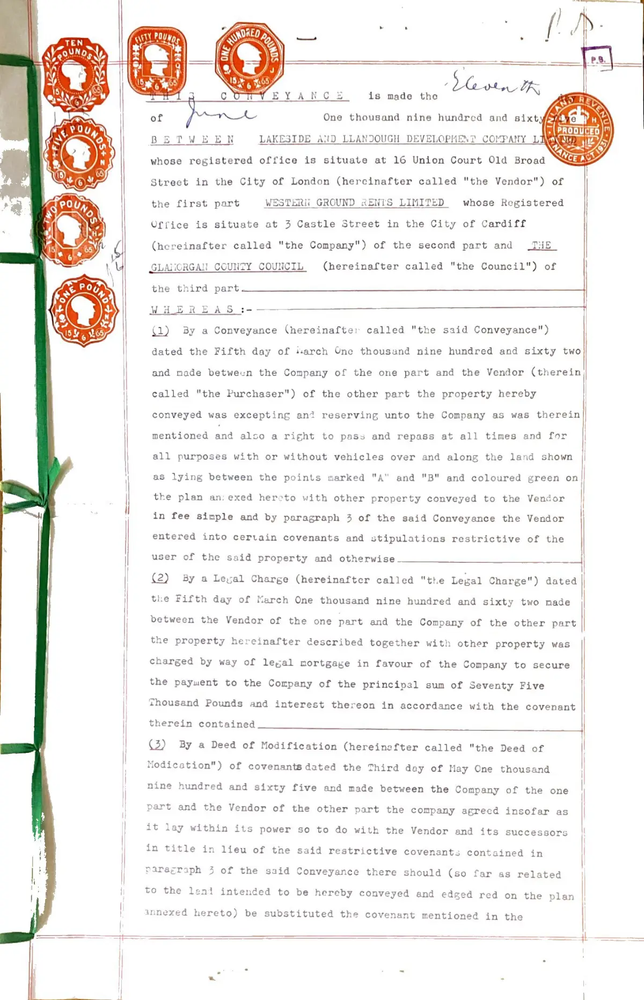

GHF-E106-R106-A1 partial
Conveyance dated 11 June 1965.pdf

Transcript
cre is made the whose registered office is situate at 16 Union Court Old Broad Street in the City of London (hercinafter called "the Vendor") of the first part WESTERI( GROUND ENTS LIMITED whose Registered Office is situate at 3 Castle Street in the City of Cardiff (hereinafter called "the Company") of the second part and _THE GLAHCRGAN COUNTY COUNCIL (hereinafter called "the Council") of the third part WHEREAS :-—— (1) By a Conveyance (hereinafter called "the said Conveyance") } dated the Fifth day of tsarch One thousand nine hundred and sixty two and made between the Company of the one part and the Vendor (therein) called "the Purchaser") of the other part the property hereby conveyed was excepting ani reserving unto the Company as was therein mentioned and also a right to pass and repass at all times and for all purposes with or without vehicles over and along the land shown | | as lying between the points marked "A" and "B" and coloured green on | the plan an:exed hereto with other property conveyed to the Vendor \ in fee simple and by paragraph 3 of the said Conveyance the Vendor entered into certain covenants and stipulations restrictive of the
Read more
user of the said property and otherwise (2) By a Legal Charge (hereinafter called "tte Legal Charge") dated the Fifth day of March One thousand nine hundred and sixty two made between the Vendor of the one part and the Company of the other part the property hereinafter described together with other property was charged by way of legal nortgage in favour of the Company to secure the paywent to the Company of the principal sum of Seventy Five Thousand Pounds and interest thereon in accordance with the covenant therein contained (3) By a Deed of Modification (hereinefter called "the Deed of | Modication") of covenants dated the Third day of Nay One thousand nine hundred and sixty five and made between the Company of the one I; part and the Vendor of the other part the company agreed insofar as | it lay within its power so to do with the Vendor and its successors H in title in lieu of tne said restrictive covenants contained in | paragraph 3 of the said Conveyance there should (so far as related | to the leni intended to be hereby conveyed and edged red on the plan annexed hereto) be substituted the covenant mentioned in the | —— — ———— “ Ps ” Schedule thereto and which said covenant is set forth in the Flag geksauke hereto and that it should not be necessary for layout plan, and elevations to be submitted to the Company for its prior approvas and it was further ogreed that except as aforesaid the restrictiyg covenants contained in the Conveyance should remain in full ‘force 4 effect a (4) The premises intended to be hereby conveyed are with other, \ _ ee |] premises subject to a Wayleave Agreement short particulars whereof - J F a (5) The Vendor has agreed with the Council for the sale to the, are set out in the Third Schedule hereto, nO Council for Sixteen Thousand Eight Hundred Pounds of the fee ee ay “’ NS the property hereby conveyed subject as hereinafter expressed, but otherwise free from incumbrances (6) The Company being satisfied that the other property comprised the Legal Charge is a sufficient security for all moneys thereby secured has agreed to join herein in manner hereinafter appeari) NOW @HIS DEED WITNESSETH as follows i 1. IN pursuance of the said Agreement and in consideration of the. sum of SIXTEEN THOUSAND EIGHT HUNDRED POUNDS paid by the Council to! the Vendor with the consent of the Compeny (the receipt whereof the t Vendor hereby acknowledges) the Vendor as Beneficial Owner hereby i conveys and the Company as Mortgagee hereby release unto the Council ALL THAT piece or parcel of land situate at Llandough in the Urban i District of Penarth in the County of Glamorgan and containing in are Three Point Three Five Two acres or thereabouts and forming part of Enclosure 106 on the Ordnance Survey Map Glamorgan Sheet XLVII.6 (1941 Edition) and which said piece of land is more particularly delineated and described in the plan annexed hereto and thercon edg red EXCEPTING AND RESERVING to the Vendor the right for the Vendor construct a nine inch diameter foul and a nine inch diameter stormwater drainage system near the point marked "D" on the said pl with the right for the Vendor at any time and from time to time to enter upon the land hereby conveyed to maintain the said drainage system until it is adopted as a public sewer by the local authority TO HOLD * the same unto the Council in fee simple discharged from the Legal Charge and all principal moneys and interest thereby secured all asserts and demands thereunder SUBJECT to the exceptions and reservations and to the said covenants and stipulations (as modified by the Deed of Modification) contained in the said Conveyance 80 for as the same are still subsisting and capable of taking effect and —— i y i i See: Te eS ee ll a | ~N Po g 1-203 Llandough Farm -, / Cte, wenn 98 LANDOVE (Llandoch) BRB @X BEHALF OF WESTERN GROUND RENTS, LI 9 REPRODUCED FROM OS.S. GLAM XLVII 6 eat (Fee ZZ GLAMORGAN COUNTY COUNCIL | SCALE 1/2500) x LE Evers i ARIBA LLANDOUGH DRWG. NOLS3 COUNTY ARCHITECT PROPOSED PS. SITE DATE 2-5-62] COUNTY HALL. CARDIFF | uly Ye ep 8 <Oaimat SURVEY aang rom OF THE) aera To oreizes © - pores Cer me Core” This is ie. plan referred to in the, CONVEYANCE dated the day of / 4 1965 made between LAKESIDE AND LLANDOUGH DEVELOPMENT CO!’ PANY LIMITED of the first part WESTERN GROUND RENTS LINITED of the second part and THE GLAMORGAN COUNTY CONCIL of the third part affect the property hereby conveyed AND SUBJECT ALSO to and with the benefit of the said wayleave agreement so far as it affects the premises hereby conveyed ae THE Council hereby covenants with the Vendor (a) By way of indemnity only and only in so far as the said covenants and stiplations are still subsisting and capable of taking effect and affect the property hereby conveyed that the Council will at all time hereafter duly perform and observe the said covenants and stipulations and will keep the Vendor and its successors effectually indemnified against all actions proceedings costs asserts and demands whatsoever in respect of the’ said covenants and stipulations or any of them (b) That upon the Vendor completing the construction of a new road fronting the Southern boundary of the land hereby conveyed between the points marked "E" - "D" on the said plan hereto annexed to the full required dimensions as laid down by and to the satisfaction of the Highway Authority the Council will reimburse the Vendor one half of Twenty Four Pounds Four Shillings and One Penny per lineal yard the agreed cost of construction of the said road including pavements drains and gullies — . (c) Without undue delay when the said new roadway has been constructed as aforesaid to erect a temporary post and wire fence alo the Southern boundary of the said land hereby conveyed and to maintain the said temporary fence until the Council develop the said land for building purposes whereupon they shall replace the said temporary fence with suitable permanent fencing and thereafter maintain the same) (4) On the Council's side of the hedges forming the Eastern boundary of the land hereby conveyed to erect a temporary post and wire fence and thereafter maintain the same until they develop the said land for building purposes whereupon the said temporary fence shall be replaced by suitable permanent fencing (e) Without undue delay when the said land is developed for building purposes to erect and thereafter maintain suitable fencing on the Council's side of the hedges along the North Eastern and North to North Western boundaries (£) It is agreed and declared by and between the parties hereto that the Council's responsibility for trimming and maintaining the hedges at present forming the boundaries of the said land shall be limited to the side which faces the land hereby conveyed 2.__THE Company hereby acknowledges the right of the Council to production of the several documents specified in the Second Schedule | hereto and to delivery of copies thereof 4, THE Vendor hereby covenants with the Council that as and wheh any of the documents mentioned in the Second Schedule hereto shall | come into the possession of the Vendor or its successors in title it| or they will when requested and at the cost of the Council or its successors in title execute a statutory undertaking for the safe custody of such documents and that in the meantime and until the execution of such undertaking every person having for the time being! possession of the said documents will keep them safe whole | uncancelled and undefaced unless prevented from so doing be fire ¥ 4 other inevitable accident. IN WITNESS whereof the parties hereto have hereunto caused — their respéctive Common Seals to be hereunto affixed the day and bal ie year first before written THE FIRST SCHEDULE REFERRED TO The covenant contained in Clause 43 of the said Conveyance as modified by the said Deed of Modification "3s FOR the benefit of the property of the Company situate within a radius of 100 yards measured from the nearest part of the premises } hereby conveyed ‘and-every part thereof the Purchaser heteby covenant with the Company and its assigns that the Purchaser or the persons THE COMMO deriving title under it will not use or occupy nor permit or suffer Rexenate to be used or occupied the said premises hereby conveyed or any building or structure thereon or any part thereof for any noisy noxious or offensive trade business or occupation shop warehouse or other place for carrying on any trade or business whatsoever except as should be agreed between the Company and the Purchaser as should be conducive to good estate development and planning or of public ays worship or as a lunatic asylum or for a public house inn tavern or beer-shop or otherwise for the sale of wine malt liquors or spirituous liquors or for the purpose of displaying any advertisement cae eOEO! or in such manner as to cause damage to any other lands or buildings within the said radius PROVIDED always that the use of the said land for Educational or Local Governmentpurposes shall not be deemed to be a breach of this covenant PROVIDED also that nothing herein contained shall impose any restriction whatsoever upon the use of any property other than the premises hereby conveyed or restrain the release or modification at any time by the Company of any restrictive stipulations affecting any such property or to be taken to be evidence of a building scheme" :
Artifact description
Supplies a 1965 land conveyance and purchase price, states no record found indicating a below-market or gifted transfer.
| Catalogue ID | GHF-E106-R106-A1 |
|---|---|
| What it is | PDF document from Vale of Glamorgan Council. Attached to an email received on 14 September 2026, their reference 00211027. 8 pages. |
| From | Vale of Glamorgan Council |
| Email received | 14 September 2026 |
| Their reference | 00211027 |
| Pages | 8 |
| File | Conveyance dated 11 June 1965.pdf (2924 KB) |
| State | Read |
Our integration
A conveyance dated 11 June 1965, supplied by the Vale of Glamorgan Council. The parties are a vendor with a registered office at Old Broad Street, London; Western Ground Rents Ltd (3 Castle Street, Cardiff); and Glamorgan County Council. It recites an earlier conveyance of 5 March 1962 between Western Ground Rents Ltd and the same vendor, and a reserved right of way. The contract is GHF-E106-R107-A1.
Why it matters: it puts Western Ground Rents Ltd, the 1938 buyer from the Bute estate, in the chain of title in 1962 and 1965. It is the first deed on file with a public body as a party.
Concern to test: which land the 1965 plan covers, and whether it overlaps the Tŷ Mawr holding. The scan is poor and the plan is not yet read.
What cuts against the case: the council found no record of a below-market or gifted transfer. The deed reads as an ordinary sale for a stated price.
Working-theory relevance · 29 October 2026: The 1965 conveyance places WGR and a public body in a documented transaction, but its title-theory relevance depends on the precise plan, parties, recitals, operative land description, price and reserved rights. The record presently reads as a sale for stated consideration and the plan is not yet reliably mapped to Tŷ Mawr; that is a counterpoint to any assumption that this was a gratuitous or improper transfer. Theory and test schedule.
Related: GHF-E106-R107-A1 — 1965 Contract.pdf · The covering email · What They Don’t Say: WTDS-98a1feed-1 · EV-0463 in the evidence catalogue · Timeline · Disclosure Dartboard